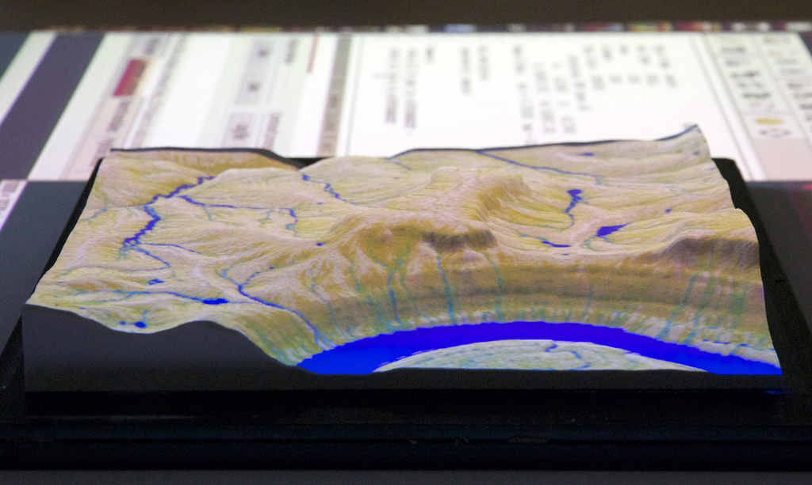
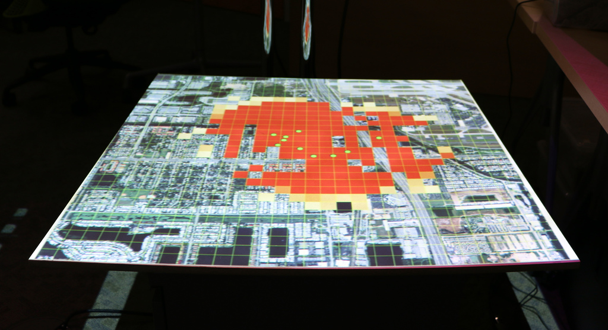

Geo4all Webinar
Tangible Landscape
Helena Mitasova, Anna Petrasova, Brendan Harmon, Vaclav Petras, Payam Tabrizian, Ross Meentemeyer

Inaugural GeoforAll - UCGIS - ASPRS webinar
This is the first webinar in a series offered by
- Geo for All: Education and research outreach initiative by OSGeo foundation
- UCGIS: University Consortium for Geographic Information Science
- ASPRS: American Society of Photogrammetry and Remote Sensing
Center for Geospatial Analytics
The seminar is presented by GeoforAll laboratory at the Center for Geospatial Analytics (CGA), North Carolina State University
CGA is an interdisciplinary research and education center with focus on geospatial computing, modeling, analytics and geovisualization.
We offer MGIST professional master degree (on-line and on-campus) and a new PhD in Geospatial Analytics will start in 2017
Motivation for Tangible Interfaces for GIS
History


An evolution of Illuminating Clay and the Tangible Geospatial Modeling System
Piper, Ben, Carlo Ratti, and Hiroshi Ishii. 2002. “Illuminating Clay: A Tangible Interface with Potential GRASS Applications.” In Proceedings of the Open Source GIS - GRASS Users Conference 2002. Trento, Italy.
L. Tateosian, H. Mitasova, B. A. Harmon, B. Fogleman, K. Weaver, and R. S. Harmon, “TanGeoMS: tangible geospatial modeling system.,” IEEE Trans. Vis. Comput. Graph., vol. 16, no. 6, pp. 1605–12, 2010.
Image source: MIT Media Lab
Other systems

Augmented Reality Sandbox by KeckCAVES
Image source: http://idav.ucdavis.edu/
Tangible interaction with GIS
With Tangible Landscape you can hold a GIS in your hands - feeling the shape of the earth, sculpting its topography, and directing the flow of water.
How-it-works

Tangible Landscape couples a digital and a physical model through a continuous cycle of 3D scanning, geospatial modeling, and projection
Overview of different setups
1 stand, ceiling projector, medium-sized models


Overview of different setups
2 stands, short-throw projector, large models but with distortion


Overview of different setups
2 stands, pocket projector, small models


Overview of different setups
1 stand, portable projector, medium-sized models


Overview of different setups
1 stand, projector with special lense, large models


Hardware
| Type | Product | Cost |
|---|---|---|
| Computer | System 76 Oryx Pro | $1500 |
| Projector | Optoma ML750 WXGA 700 DLP LED | $500 |
| 3D sensor | Xbox One Kinect | $100 |
| Kinect Adapter for Windows | $50 | |
| Stand | Avenger 40-Inch C-Stand with Grip Kit | $200 |
| Avenger 40-Inch C-Stand with Grip Kit | $200 | |
| Avenger F800 3-Inch Baby Wall Plate | $10 | |
| Avenger F800 3-Inch Baby Wall Plate | $10 | |
| Peripherals | HDMI cable | $10 |
| Extension cord | $10 | |
| Modeling media | Waba Fun Kinetic Sand 11 Lbs | $50 |
Building physical 3D models
Hand sculpting

CNC routing

3D printing

Casting polymeric sand


In-situ digital fabrication
A 3-axis CNC milling machine to model a landscape in polymer-enriched sand using a plunge cut
Software

Software
| Components | Use |
|---|---|
| Tangible Landscape | GUI plugin for GRASS GIS for running Tangible Landscape |
| r.in.kinect | Add-on for importing and processing data from Kinect |
Dependencies
| Program | Use |
|---|---|
| libfreenect2 | Drivers for Kinect v2 |
| PCL | Point cloud processing |
| GRASS GIS 7 | Geospatial modeling and visualization |
Interfaces
- TUI: no GIS expertise needed, users control the landscape shape
- GUI: to operate Tangible Landscape and control scanning and displayed layers
- CLI: using Python GRASS API to create GIS workflows, see for example Workshop at FOSS4G NA 2016

Interactions

Applications: topography
slope |
erosion |
landforms | |
Intuitive scientific modeling with Tangible Landscape


Tangible Landscape is designed to make scientific data, models, and simulations exploratory, engaging, and fun
Applications: visibility
Visibility analysis
Applications: solar analysis


Solar irradiation and cast shadow
Applications: trail planning


Optimized trail routing between waypoints based on energetics, topography, and cost maps with feedback including trail slopes and viewsheds
Serious gaming


Coastal flooding game
Save houses from coastal flooding by building coastal defenses
Structured problem solving with rules, challenging objectives, and scoring
Serious gaming


Termite infestation game
Manage the spread of termites across a city by treating city blocks
Using an epidemiological model in R
Open source

Fork us on GitHub
Tangible Landscape plugin for GRASS GIS
Open education
Open source software, open algorithms, open data, and open educational resources
Petras, V., Petrasova, A., Harmon, B., Meentemeyer, R.K., Mitasova, H. Integrating Free and Open Source Solutions into Geospatial Science Education. ISPRS International Journal of Geo-Information. 2015, 4, 942-956. doi:10.3390/ijgi4020942
Future work

In-situ robotic fabrication for Tangible Landscape
Future work

Real-time data and autonomous construction with Tangible Landscape
Further reading

Read our book and give it a try